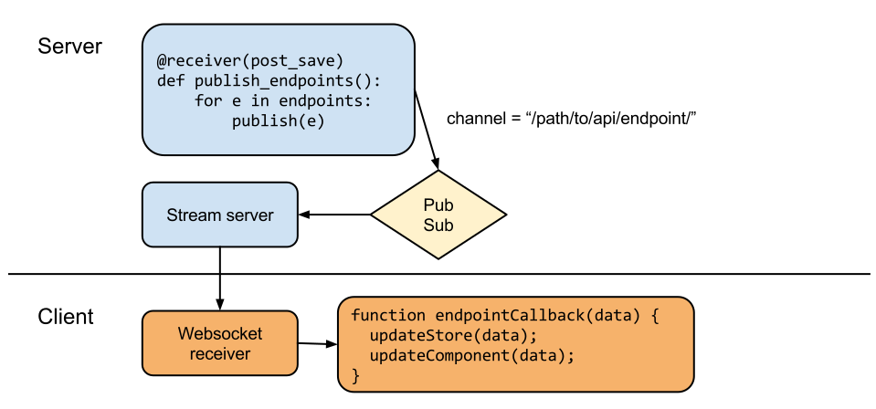

origins
heroku connect
polling wasn't cutting it
defining the problem
let's talk about
the web
the web is
service oriented


the shift was gradual

platform play is table stakes
responsiveness is an expectation
it's not as hard as it used to be
 http://caniuse.com/#feat=websockets
http://caniuse.com/#feat=websockets
just because it's easy, doesn't mean it's easy to do right
realtime transport design is not a solved problem
platform 🆚 realtime

reframing the problem
events are a proxy for state change
isolating data mutation is key
REST endpoints fully describe application state
a better way
let's review
realtime producer as REST consumer

challenges
isolating data mutation
authentication
what API endpoints changed?
performance
server implementation
let's look at some code
why react?
built for data mutation over time
the shadow dom
server-side rendering
uni-directional data flow
flux architecture

view
store
dispatcher
actions
client implementation
more code diving
live demo time
http method is a stretched analogy
clients must maintain a list of subscriptions
beware the race conditions
realtime API mirrors REST API
client consumer doesn't care about push vs pull
data service triggers the publishing of REST endpoints